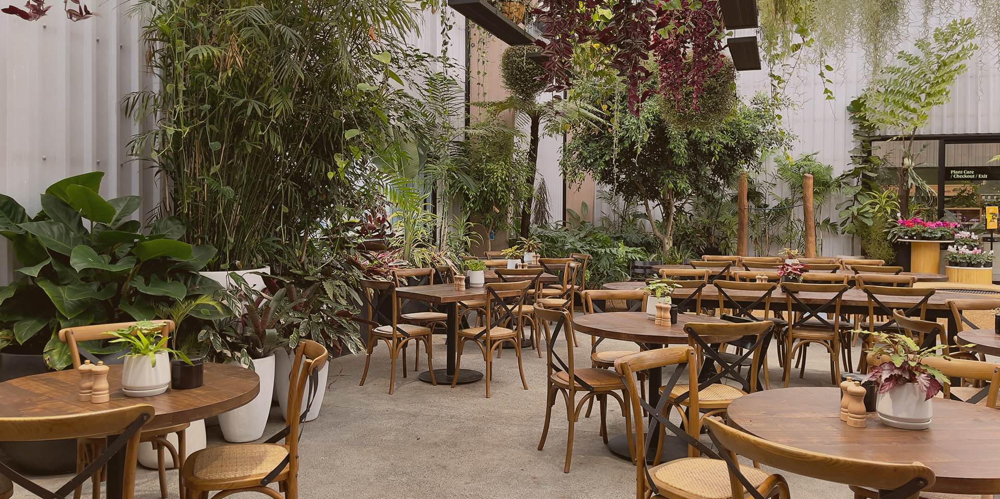

<section id="i-banner">
  <div class="scrolldown"><span>SCROLL</span></div>
  <div class="swiper-pagination"></div>
  <div class="swiper-button-prev"></div>
  <div class="swiper-button-next"></div>

  <div class="c-kanban swiper">
    <div class="c-kanban__list swiper-wrapper">
      <!-- 有連結 -->
      <div class="swiper-slide">
        <a href="" target="_blank" title="帶入名稱">
          <div class="c-kanban__text">
            <p class="c-kanban__title"><span>All-round Solution</span></p>
            <p class="c-kanban__subtitle"><span>全方位解決方案，滿足客戶多樣化需求並提供技術支援</span></p>
          </div>
          <picture class="c-kanban__media">
            <source srcset="assets/images/del/iban_img1s.jpg" media="(max-width: 767px)">
            <!-- 預設圖 <source srcset="assets/images/default/default_800x960.jpg" media="(max-width: 767px)"> -->
            
            <!-- 預設圖  -->
          </picture>
        </a>
      </div>
      <!-- 無連結 -->
      <div class="swiper-slide">
        <div class="c-kanban__text">
          <p class="c-kanban__title"><span>All-round Solution</span></p>
          <p class="c-kanban__subtitle"><span>全方位解決方案，滿足客戶多樣化需求並提供技術支援</span></p>
        </div>
        <picture class="c-kanban__media">
          <source srcset="assets/images/del/iban_img2s.jpg" media="(max-width: 767px)">
          
        </picture>
      </div>
      <!-- 影片 -->
      <div class="video-youtube swiper-slide">
        <picture class="c-kanban__media">
          <!-- data-plyr-embed-id：YouTube影片ID -->
          <div class="js-player" data-plyr-provider="youtube" data-plyr-embed-id="3hLESh77fSg"></div>
          <!-- YT 預設 640x480：//img.youtube.com/vi/${videoid}/sddefault.jpg -->
          <!-- YT 預設 1280x720：//img.youtube.com/vi/${videoid}/maxresdefault.jpg -->
          <source srcset="//img.youtube.com/vi/3hLESh77fSg/maxresdefault.jpg" media="(max-width: 767px)">
          
        </picture>
      </div>
    </div>
  </div>
</section>